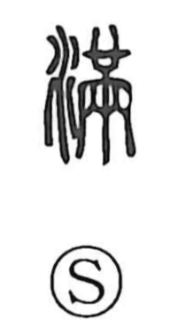

満

Kun: michiru, mitasu, taru | On: man
full ・ to be full ・ to fill ・ sufficient
Explanation
満, formerly 滿, combines 水, water, with the sound element 㒼. 㒼 pictures a ceremonial lap-covering embroidered across its whole surface. The decoration fills the garment, leaving no part of the field unadorned.
Adding water transfers that fullness to a vessel or body of water filled to the brim, even overflowing. From this come filling and being full generally. A requirement fully met gives ‘suffice’ or ‘satisfy,’ and something brought to its full extent is complete.
Fullness can also become excessive. Applied to a person’s bearing, 満 may suggest self-satisfaction or arrogance. The development begins with the densely embroidered surface and continues through water, sufficiency, and an excess that can no longer be contained.